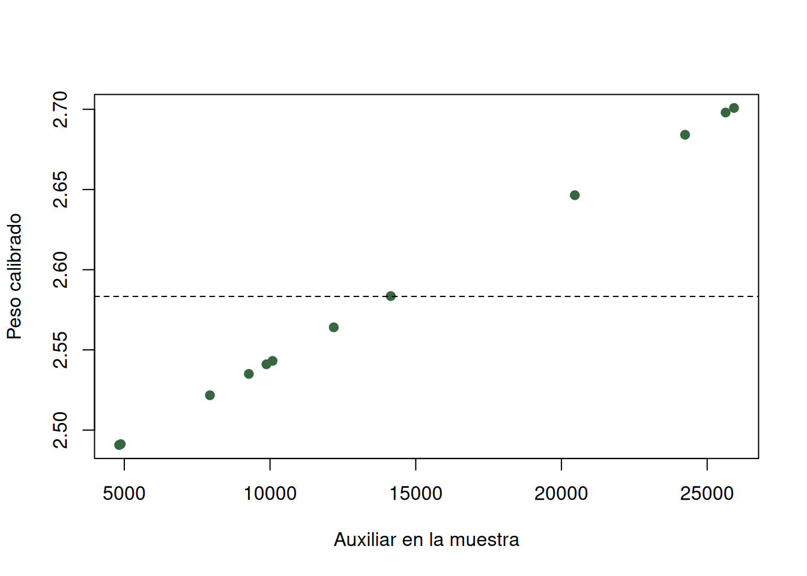
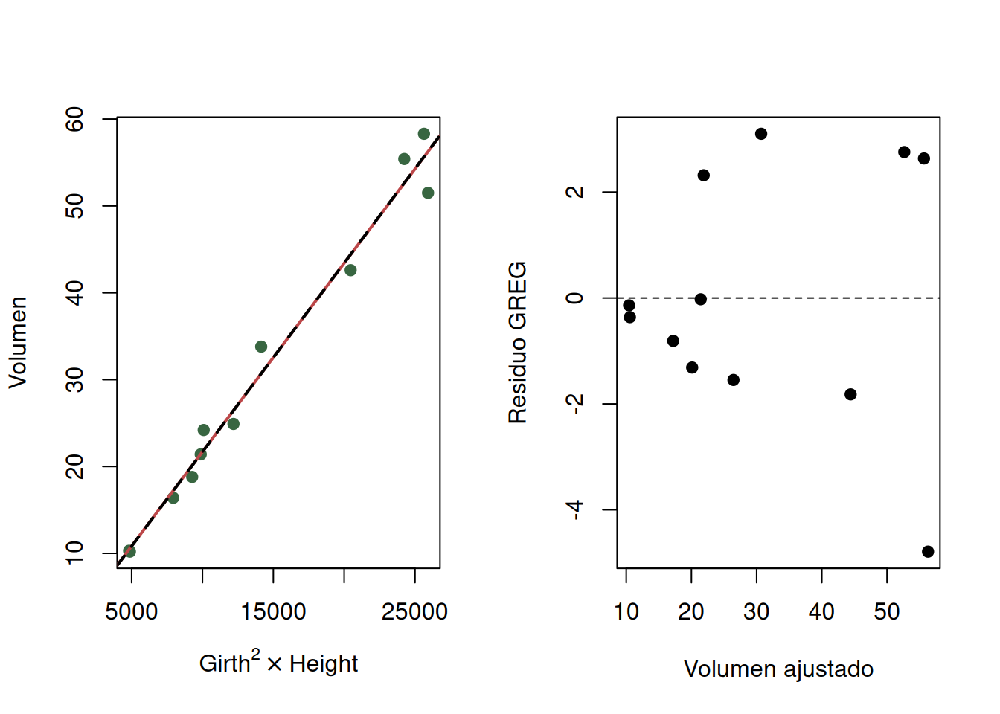

data(trees, package = "datasets")
U <- transform(
trees,
id = seq_len(nrow(trees)),
x_aux = Girth^2 * Height,
grande = as.integer(Volume >= 30)
)
N <- nrow(U)
set.seed(2101)
id_piloto <- sample.int(N, 8)
piloto <- U[id_piloto, ]
data.frame(
N = N, n_piloto = nrow(piloto), faltantes = sum(is.na(U)),
ids_unicos = length(unique(U$id)), duplicados = sum(duplicated(trees)),
volumen_no_positivo = sum(U$Volume <= 0), DE_piloto = sd(piloto$Volume)
)
#> N n_piloto faltantes ids_unicos duplicados volumen_no_positivo DE_piloto
#> 1 31 8 0 31 0 0 17.45361
piloto[c("id", "Volume")]
#> id Volume
#> 7 7 15.6
#> 1 1 10.3
#> 13 13 21.4
#> 28 28 58.3
#> 30 30 51.0
#> 8 8 18.2
#> 15 15 19.1
#> 18 18 27.43 Planificación del tamaño de muestra
Precisión, costo, información auxiliar y multiplicidad
3.1 Fundamentos: planear desde el estimando
El tamaño de muestra no es una propiedad del estudio aislada de su pregunta. Se calcula para un estimando, una precisión, un nivel de confianza, un diseño y una población definidos. También depende de la heterogeneidad prevista, la no respuesta y el presupuesto. Elegir primero un número cómodo de unidades y buscar después qué puede estimarse invierte el orden lógico (Lohr 2022; Valliant et al. 2013).
Antes de calcular \(n\) deben registrarse:
- población, marco, unidad de muestreo y dominios que requieren resultados;
- media, proporción o total primario y su escala;
- semiamplitud tolerable \(d\) del intervalo, absoluta o relativa;
- confianza \(1-\alpha\) y valor crítico \(z_{1-\alpha/2}\);
- DE \(S\) o proporción esperada \(P\), procedente de un piloto comparable;
- efecto de diseño, tasa de respuesta y estructura de costos;
- regla de redondeo y análisis de sensibilidad.
La precisión objetivo \(d\) es la distancia máxima planeada entre la estimación y cada extremo del intervalo, no la probabilidad de que el estimador sea exacto. Un intervalo del 95 % con semiamplitud 4 unidades expresa una meta de error de muestreo; no cubre sesgo de marco, medición, no respuesta informativa ni un piloto no comparable.
3.1.1 Media y corrección por población finita
Bajo muestreo aleatorio simple sin reemplazo (MAS),
\[ \operatorname{Var}(\bar y)=\left(1-\frac nN\right)\frac{S^2}{n}. \]
Si se ignora inicialmente la finitud, el tamaño para una media es
\[ n_0=\frac{z_{1-\alpha/2}^2S^2}{d^2}. \]
Una forma convencional de aplicar la corrección por población finita (CPF) es
\[ n_{CPF}=\frac{n_0}{1+(n_0-1)/N}. \]
Se redondea hacia arriba. La pequeña diferencia entre esta expresión y resolver directamente la fórmula de varianza anterior, \(n=Nn_0/(N+n_0)\), procede de la convención usada para la varianza finita; debe declararse, pero rara vez cambia el entero final. La CPF solo corresponde cuando el marco tiene \(N\) unidades, se muestrea sin reemplazo y la inferencia queda en esa población. No debe aplicarse porque el área de estudio parezca pequeña.
3.1.2 Proporción
Para una proporción con valor anticipado \(P\),
\[ n_0=\frac{z_{1-\alpha/2}^2P(1-P)}{d^2},\qquad n_{CPF}=\frac{n_0}{1+(n_0-1)/N}. \]
Si no existe información previa, \(P=0.5\) maximiza \(P(1-P)\) y produce el cálculo más conservador. Esto no garantiza suficientes casos raros: si se requieren análisis de una especie con prevalencia 0.02, también debe planearse el número esperado de positivos y quizá un diseño dirigido o estratificado.
3.1.3 Piloto, efecto de diseño y no respuesta
La varianza piloto debe proceder de unidades, estación, soporte y protocolo comparables. Una DE calculada con individuos internos no sustituye la DE entre parcelas si las parcelas son las unidades seleccionadas. Con un piloto pequeño, \(S\) es inestable; por eso conviene presentar una cuadrícula de valores plausibles, no una cifra con falsa certeza.
El efecto de diseño se define como
\[ DEFF=\frac{\operatorname{Var}_{d}(\widehat\theta)} {\operatorname{Var}_{MAS}(\widehat\theta)}. \]
Para planificación aproximada se reemplaza \(n_0\) por \(n_0^*=DEFF\,n_0\) antes de la CPF. En conglomerados de tamaño medio \(L\) e intracorrelación \(\rho\), \(DEFF\approx1+(L-1)\rho\). Esta aproximación no reemplaza la fórmula específica del diseño ni garantiza un número suficiente de unidades primarias (Thompson 2012).
Si \(r\) es la proporción esperada de unidades con respuesta completa,
\[ n_{contactar}=\left\lceil\frac{n_{CPF}}{r}\right\rceil. \]
Inflar el tamaño compensa pérdida de cantidad solo si quienes no responden son intercambiables, para el estimando, con quienes responden. No elimina sesgo por no respuesta diferencial. Deben separarse unidades no elegibles, no localizadas, rechazos y mediciones fallidas.
3.1.4 Costo y factibilidad
Con costo fijo \(C_0\), costo por contacto \(c\) y presupuesto \(C\),
\[ n_{contactar}^{max}=\left\lfloor\frac{C-C_0}{c}\right\rfloor. \]
La planificación es factible si ese máximo alcanza el número requerido y si existen suficientes unidades elegibles. En diseños por conglomerados, una función más realista separa viajes y mediciones: \(C=C_0+c_1m+c_2mL\), con \(m\) sitios y \(L\) observaciones por sitio. Añadir muchas observaciones dentro de pocos sitios puede ser barato y, con \(\rho>0\), aportar poca información independiente.
3.2 Aplicación reproducible: planificación con trees
datasets::trees contiene diámetro, altura y volumen de 31 cerezos negros talados. No documenta un muestreo probabilístico de bosques actuales. Aquí las 31 filas son una población finita didáctica de registros reales; el nuevo sorteo solo permite estudiar planificación y estimación dentro de ese marco.
El objetivo es estimar el volumen medio con semiamplitud \(d=4\) pies cúbicos y 95 % de confianza. Se anticipa \(DEFF=1.3\) para representar una desviación respecto del MAS y respuesta completa \(r=0.85\). Esos dos valores son supuestos de planificación, no resultados de trees.
3.2.1 Procedencia, piloto y auditoría
El piloto incluye los registros 7, 1, 13, 28, 30, 8, 15 y 18 y produce \(S=17.45\) pies cúbicos. Es heterogéneo y pequeño: un árbol de volumen 58.3 tiene influencia apreciable. Además, en un estudio nuevo esas ocho unidades ya medidas deberían integrarse mediante un diseño previsto o reservarse; no se puede llamar “piloto independiente” después de escogerlo por sus resultados.
3.2.2 Funciones transparentes de planificación
n_media <- function(N, S, d, conf = 0.95, deff = 1, respuesta = 1) {
stopifnot(N > 1, S >= 0, d > 0, deff > 0,
respuesta > 0, respuesta <= 1)
z <- qnorm(1 - (1 - conf) / 2)
n0 <- deff * z^2 * S^2 / d^2
n_completa <- min(N, ceiling(n0 / (1 + (n0 - 1) / N)))
n_contactar <- min(N, ceiling(n_completa / respuesta))
c(n0 = n0, n_completa = n_completa, n_contactar = n_contactar)
}
n_proporcion <- function(N, P = 0.5, d, conf = 0.95,
deff = 1, respuesta = 1) {
stopifnot(P >= 0, P <= 1)
z <- qnorm(1 - (1 - conf) / 2)
n0 <- deff * z^2 * P * (1 - P) / d^2
n_completa <- min(N, ceiling(n0 / (1 + (n0 - 1) / N)))
n_contactar <- min(N, ceiling(n_completa / respuesta))
c(n0 = n0, n_completa = n_completa, n_contactar = n_contactar)
}
plan_media <- n_media(N, sd(piloto$Volume), d = 4,
deff = 1.3, respuesta = 0.85)
plan_prop <- n_proporcion(N, P = 0.5, d = 0.12,
deff = 1.3, respuesta = 0.85)
round(rbind(media = plan_media, proporcion = plan_prop), 2)
#> n0 n_completa n_contactar
#> media 95.08 24 29
#> proporcion 86.70 24 29Ambos objetivos exigen 24 respuestas completas y 29 contactos en este marco. Para la media, el tamaño inicial ajustado es 95.08, mayor que \(N\); la CPF lo reduce con fuerza. Para la proporción conservadora, \(n_0^*=86.70\) y el entero final coincide. La coincidencia no es general: cambia con \(d\), \(S\), \(P\) y el estimando. Contactar 29 de 31 registros deja poco margen para reemplazos y vuelve esencial definir de antemano cómo se tratará la no respuesta.
3.2.3 Auditoría de costo y precisión alcanzable
C0 <- 500
c_contacto <- 35
presupuesto <- 1500
n_max <- min(N, floor((presupuesto - C0) / c_contacto))
n_completas_esperadas <- floor(0.85 * n_max)
costo_requerido <- C0 + c_contacto * plan_media["n_contactar"]
c(n_contactar_max = n_max,
completas_esperadas = n_completas_esperadas,
completas_requeridas = plan_media["n_completa"],
costo_requerido = costo_requerido,
deficit_presupuesto = costo_requerido - presupuesto)
#> n_contactar_max completas_esperadas
#> 28 23
#> completas_requeridas.n_completa costo_requerido.n_contactar
#> 24 1515
#> deficit_presupuesto.n_contactar
#> 15El presupuesto permite 28 contactos y unas 23 respuestas, una menos que la meta; faltan 15 unidades monetarias para el plan redondeado. Esa diferencia no debería ocultarse reduciendo \(n\) sin recalcular precisión. Las opciones defendibles son ampliar presupuesto, aceptar una semiamplitud mayor, reducir costos sin cambiar el protocolo o justificar un diseño más eficiente.
3.2.4 Sensibilidad a supuestos
escenarios <- expand.grid(
S = c(12, sd(piloto$Volume), 22),
d = c(3, 4, 5),
DEFF = c(1, 1.3),
respuesta = c(0.75, 0.85, 0.95)
)
planes <- t(apply(escenarios, 1, function(a)
n_media(N, a["S"], a["d"], deff = a["DEFF"],
respuesta = a["respuesta"])[c("n_completa", "n_contactar")]))
sensibilidad <- cbind(escenarios, planes)
sensibilidad[c(1, 8, 15, 22, 29, 36, 43, 50), ]
#> S d DEFF respuesta n_completa n_contactar
#> 1 12.00000 3 1.0 0.75 21 28
#> 8 17.45361 5 1.0 0.75 19 26
#> 15 22.00000 4 1.3 0.75 26 31
#> 22 12.00000 4 1.0 0.85 17 20
#> 29 17.45361 3 1.3 0.85 27 31
#> 36 22.00000 5 1.3 0.85 24 29
#> 43 12.00000 5 1.0 0.95 14 15
#> 50 17.45361 4 1.3 0.95 24 26La precisión domina el esfuerzo porque \(d\) entra al cuadrado. Una menor tasa de respuesta aumenta contactos, no información de quienes sí responden. Cuando la CPF acerca el plan a un censo, distintos supuestos pueden producir el mismo entero por el límite \(N\); eso no significa que sean equivalentes en una población grande.
3.3 DEFF retrospectivo con vegan::BCI
vegan::BCI contiene conteos de árboles con DAP de al menos 10 cm en 50 hectáreas contiguas de Barro Colorado (Condit et al. 2002; Harms et al. 2001; Oksanen et al. 2024). Se usa el censo para comprobar cómo una agrupación espacial modifica el cálculo; no es un piloto independiente ni una recomendación para otro bosque.
if (!requireNamespace("vegan", quietly = TRUE)) {
stop("Se requiere el paquete 'vegan' para el ejemplo BCI.")
}
data(BCI, BCI.env, package = "vegan")
tallos <- rowSums(BCI)
columna <- as.integer((BCI.env$UTM.EW - min(BCI.env$UTM.EW)) / 100 + 1)
L <- as.integer(table(columna)[1])
medias_col <- tapply(tallos, columna, mean)
MS_entre <- L * var(medias_col)
MS_dentro <- mean(tapply(tallos, columna, var))
rho <- (MS_entre - MS_dentro) /
(MS_entre + (L - 1) * MS_dentro)
DEFF_bci <- 1 + (L - 1) * rho
c(hectareas = length(tallos), columnas = length(unique(columna)),
L = L, DE_tallos = sd(tallos), ICC = rho, DEFF = DEFF_bci)
#> hectareas columnas L DE_tallos ICC DEFF
#> 50.0000000 10.0000000 5.0000000 42.5532128 0.2140439 1.8561755
n_media(length(tallos), sd(tallos), d = 10, deff = DEFF_bci)
#> n0 n_completa n_contactar
#> 129.116 37.000 37.000La ICC retrospectiva es 0.214 y el DEFF aproximado 1.856. Con una meta de ±10 tallos/ha, el cálculo pide 37 hectáreas completas. La magnitud muestra que cinco hectáreas de una misma franja no equivalen a cinco réplicas independientes. La incertidumbre de la ICC, la orientación de las franjas y el número mínimo de columnas deben examinarse antes de usarla para planear.
3.4 Razón y regresión como puente
El tamaño de muestra basado solo en \(S_y\) supone que no se aprovechará información auxiliar. Si se conoce el total poblacional \(X=\sum_Ux_i\), un auxiliar relacionado con \(y\) puede reducir residuos y, por tanto, varianza.
El estimador de razón del total es
\[ \widehat Y_R=X\frac{\sum_sy_i}{\sum_sx_i}, \]
y es apropiado cuando la relación es aproximadamente proporcional y pasa cerca del origen. El estimador de regresión es
\[ \widehat Y_{reg}=N\bar y_s+b(X-N\bar x_s),\qquad b=\frac{s_{xy}}{s_x^2}. \]
Permite intercepto y funciona como puente hacia el estimador de regresión generalizada (GREG). Ambos son asistidos por modelos: la selección probabilística sostiene la inferencia, mientras el modelo de trabajo busca precisión (Särndal et al. 1992).
3.4.1 MAS y estimadores asistidos
set.seed(2102)
n <- 12
s <- U[sample.int(N, n), ]
X_aux <- sum(U$x_aux)
b <- cov(s$x_aux, s$Volume) / var(s$x_aux)
r_hat <- sum(s$Volume) / sum(s$x_aux)
estimadores <- c(
verdad = sum(U$Volume),
HT_MAS = N * mean(s$Volume),
razon = X_aux * r_hat,
regresion = N * mean(s$Volume) + b * (X_aux - N * mean(s$x_aux))
)
e_reg <- residuals(lm(Volume ~ x_aux, data = s))
EE <- c(
HT_MAS = N * sqrt((1 - n / N) * var(s$Volume) / n),
regresion_aprox = N * sqrt((1 - n / N) * var(e_reg) / n)
)
round(estimadores, 2)
#> verdad HT_MAS razon regresion
#> 935.30 950.15 964.98 965.00
round(c(EE, correlacion_marco = cor(U$x_aux, U$Volume)), 2)
#> HT_MAS regresion_aprox correlacion_marco
#> 121.36 16.46 0.99En esta realización, HT estima 950.15 pies cúbicos, razón 964.98 y regresión 965.00, frente al total finito 935.30. El auxiliar es muy fuerte (\(r=0.989\) en las 31 filas) y el EE linealizado cae de 121.36 a 16.46. Ese EE es una aproximación basada en residuos y no incluye que el auxiliar se eligió al ver el marco; la ganancia debe validarse por repetición y diagnóstico, no por correlación solamente.
3.5 Calibración y GREG transparentes en base R
Partimos de pesos de diseño \(d_i=N/n\). La calibración lineal busca pesos \(w_i\) cercanos a \(d_i\) que satisfagan exactamente \(\sum_sw_i=N\) y \(\sum_sw_ix_i=X\). Con \(a_i=(1,x_i)^T\),
\[ w_i=d_i(1+a_i^T\lambda),\qquad \lambda=\left(\sum_sd_ia_ia_i^T\right)^{-1} \left\{(N,X)^T-\sum_sd_ia_i\right\}. \]
d_i <- rep(N / n, n)
A <- cbind(uno = 1, x_aux = s$x_aux)
totales_aux <- c(N, X_aux)
lambda <- solve(crossprod(A, d_i * A),
totales_aux - colSums(d_i * A))
w_cal <- d_i * drop(1 + A %*% lambda)
Y_cal <- sum(w_cal * s$Volume)
comprobacion_cal <- c(
suma_pesos = sum(w_cal), objetivo_N = N,
suma_x = sum(w_cal * s$x_aux), objetivo_X = X_aux,
total_calibrado = Y_cal,
GREG = estimadores["regresion"]
)
round(comprobacion_cal, 5)
#> suma_pesos objetivo_N suma_x objetivo_X total_calibrado
#> 31.0000 31.0000 444614.6900 444614.6900 965.0014
#> GREG.regresion
#> 965.0014El total calibrado y GREG coinciden (965.0014) porque se calibró un intercepto y el auxiliar con distancia lineal. Esta equivalencia hace visible qué aporta el método: corrige HT por la diferencia entre los totales auxiliares de la muestra expandida y del marco. No es magia ni convierte un auxiliar en respuesta.
3.5.1 Diagnóstico de pesos y tamaño efectivo
diagnostico_pesos <- function(w) {
n_eff <- sum(w)^2 / sum(w^2)
c(min = min(w), q25 = unname(quantile(w, 0.25)),
mediana = median(w), q75 = unname(quantile(w, 0.75)), max = max(w),
CV = sd(w) / mean(w), n = length(w), n_efectivo = n_eff,
DEFF_Kish = length(w) / n_eff)
}
round(diagnostico_pesos(w_cal), 3)
#> min q25 mediana q75 max CV n
#> 2.491 2.532 2.554 2.656 2.701 0.030 12.000
#> n_efectivo DEFF_Kish
#> 11.990 1.001
plot(s$x_aux, w_cal, pch = 19, col = "#386641",
xlab = "Auxiliar en la muestra", ylab = "Peso calibrado")
abline(h = N / n, lty = 2)
Los pesos van de 2.491 a 2.701, su CV es 0.030 y \(n_{efectivo}=11.99\) de 12; la penalización de Kish es casi uno. Son pesos estables en esta muestra. Un mínimo negativo, máximos extremos, CV alto o \(n_{efectivo}\ll n\) exigirían revisar cobertura del auxiliar, especificación, límites de calibración o colapso de celdas. DEFF_Kish solo diagnostica variabilidad de pesos: no incorpora conglomeración, estratificación ni relación entre pesos y respuesta (Lumley 2010).
3.5.2 Repetición y diagnóstico del modelo de trabajo
set.seed(2104)
B <- 3000
rep_aux <- t(replicate(B, {
z <- U[sample.int(N, n), ]
b_z <- cov(z$x_aux, z$Volume) / var(z$x_aux)
c(HT = N * mean(z$Volume),
razon = X_aux * sum(z$Volume) / sum(z$x_aux),
GREG = N * mean(z$Volume) + b_z * (X_aux - N * mean(z$x_aux)))
}))
verdad <- sum(U$Volume)
metricas <- t(apply(rep_aux, 2, function(x) c(
sesgo = mean(x - verdad), DE = sd(x),
RMSE = sqrt(mean((x - verdad)^2))
)))
round(metricas, 2)
#> sesgo DE RMSE
#> HT -4.46 114.16 114.22
#> razon 0.33 17.49 17.49
#> GREG 0.72 19.11 19.12
op <- par(mfrow = c(1, 2))
plot(s$x_aux, s$Volume, pch = 19, col = "#386641",
xlab = expression(Girth^2 %*% Height), ylab = "Volumen")
abline(0, r_hat, col = "#bc4749", lwd = 2)
abline(lm(Volume ~ x_aux, data = s), lty = 2, lwd = 2)
plot(fitted(lm(Volume ~ x_aux, data = s)), e_reg, pch = 19,
xlab = "Volumen ajustado", ylab = "Residuo GREG")
abline(h = 0, lty = 2)
par(op)La repetición sobre las 31 filas compara mecanismos con el mismo \(n\). Razón y GREG reducen marcadamente DE y RMSE porque el auxiliar explica casi toda la variación del volumen. El sesgo de los estimadores no lineales es pequeño frente a su dispersión en este marco. La nube y los residuos deben revisarse por intercepto, curvatura y puntos influyentes: una correlación alta no garantiza una razón constante ni extrapolación segura.
3.6 Muestreo indirecto y multiplicidad
En muestreo indirecto las unidades objetivo se alcanzan mediante unidades de un marco distinto. Un animal puede usar varios bebederos; si se seleccionan bebederos, el mismo animal puede estar enlazado varias veces. Ignorar esa multiplicidad sobrecuenta a quienes tienen más enlaces.
Sea \(m_i\) el número de unidades del marco enlazadas con el animal \(i\). Si se seleccionan \(k\) de \(M\) sitios por MAS, cada enlace observado aporta \(y_i/m_i\) y el total se estima con
\[ \widehat Y_{mult}=\frac{M}{k} \sum_{h\in s}\sum_{i:\,h\leftrightarrow i}\frac{y_i}{m_i}. \]
El marco de enlaces debe permitir identificar al mismo individuo entre sitios y conocer todos sus enlaces dentro de la población definida (Thompson 2012).
3.6.1 Ejemplo enlazado transparente
El siguiente ejemplo es completamente simulado. Ocho animales están enlazados con cinco sitios y y=1 indica una condición biológica. Cada fila es un enlace, no un animal nuevo.
enlaces <- data.frame(
animal = c("A", "A", "B", "C", "C", "D", "D", "D",
"E", "F", "F", "G", "H", "H"),
sitio = c(1, 2, 1, 2, 3, 3, 4, 5, 4, 2, 5, 5, 1, 3)
)
y_animal <- c(A = 1, B = 0, C = 1, D = 1, E = 0, F = 1, G = 1, H = 0)
enlaces$y <- unname(y_animal[enlaces$animal])
enlaces$m <- as.integer(table(enlaces$animal)[enlaces$animal])
stopifnot(all(table(enlaces$animal) ==
enlaces$m[match(names(table(enlaces$animal)), enlaces$animal)]))
enlaces
#> animal sitio y m
#> 1 A 1 1 2
#> 2 A 2 1 2
#> 3 B 1 0 1
#> 4 C 2 1 2
#> 5 C 3 1 2
#> 6 D 3 1 3
#> 7 D 4 1 3
#> 8 D 5 1 3
#> 9 E 4 0 1
#> 10 F 2 1 2
#> 11 F 5 1 2
#> 12 G 5 1 1
#> 13 H 1 0 2
#> 14 H 3 0 2
set.seed(2103)
M <- 5
k <- 2
sitios_s <- sort(sample.int(M, k))
observados <- enlaces[enlaces$sitio %in% sitios_s, ]
Y_mult <- M / k * sum(observados$y / observados$m)
c(sitios = paste(sitios_s, collapse = ", "),
estimacion_multiplicidad = Y_mult,
total_animales_con_condicion = sum(y_animal))
#> sitios estimacion_multiplicidad
#> "2, 4" "4.58333333333333"
#> total_animales_con_condicion
#> "5"Se seleccionan los sitios 2 y 4. La estimación es 4.583 frente al total simulado 5. No se espera igualdad en una muestra particular; el ajuste corrige la probabilidad mayor de observar animales con muchos enlaces.
3.6.2 Comprobación exacta e incertidumbre
contrib_sitio <- tapply(enlaces$y / enlaces$m, enlaces$sitio, sum)
combinaciones <- combn(M, k)
estimaciones_mult <- apply(combinaciones, 2, function(h)
M / k * sum(contrib_sitio[h]))
c(verdad = sum(y_animal), media_exacta = mean(estimaciones_mult),
DE_diseno = sqrt(mean((estimaciones_mult - mean(estimaciones_mult))^2)),
minimo = min(estimaciones_mult), maximo = max(estimaciones_mult))
#> verdad media_exacta DE_diseno minimo maximo
#> 5.000000 5.000000 1.767767 2.083333 8.333333La media de las diez muestras posibles es exactamente 5: el estimador es insesgado bajo el MAS de sitios y enlaces completos. Su DE de diseño es 1.77 si se usa el divisor poblacional sobre las diez muestras (la sd() muestral sería 1.86), con rango 2.08–8.33. La magnitud recuerda que solo se seleccionan dos sitios. En campo, enlaces omitidos, identificaciones duplicadas o \(m_i\) medido solo dentro de la muestra introducen sesgo que esta enumeración no representa.
3.7 Incertidumbre, auditoría y decisiones
Una auditoría previa al trabajo de campo debe conservar, al menos:
- versión de la fórmula, \(N\), \(d\), confianza, \(S\) o \(P\) y fuente del piloto;
- unidades a las que corresponden \(S\),
DEFF, respuesta y costo; - tamaños sin CPF, con CPF, completos y a contactar;
- restricciones por dominio y mínimo de unidades primarias;
- totales auxiliares, fecha del marco y diagnóstico de pesos previsto;
- regla para no respuesta, sustituciones, enlaces y multiplicidad;
- escenarios alternativos y decisión tomada antes de observar la respuesta.
El intervalo final debe usar el diseño realmente ejecutado, no el supuesto que produjo \(n\). Si la tasa de respuesta fue menor, cambiaron conglomerados o se calibraron pesos, la incertidumbre debe incorporar esos hechos. Alcanzar el tamaño nominal no repara cobertura incompleta, detección imperfecta o error de medición.
3.8 Ejercicios
3.8.1 Teóricos
- Explique por qué reducir \(d\) de 4 a 2 aproximadamente cuadruplica \(n_0\), pero puede no cuadruplicar \(n_{CPF}\).
- Distinga
DEFFpor conglomeración,DEFF_Kishpor pesos y pérdida por no respuesta. ¿Por qué no deben sustituirse sin más unos por otros? - Indique cuándo el estimador de razón sería menos defendible que GREG y qué gráfico usaría para justificar la decisión.
- Demuestre que cada animal aporta en total \(y_i\) al sumar \(y_i/m_i\) sobre sus \(m_i\) enlaces.
3.8.2 Numéricos
- Para \(N=800\), \(S=12\), \(d=2\), confianza 95 %,
DEFF = 1.5y respuesta 80 %, calcule \(n_0^*\), respuestas completas y contactos. - Para una proporción esperada de 0.2, \(N=400\) y \(d=0.04\), compare el tamaño con el cálculo conservador \(P=0.5\).
- Con \(C_0=1200\), \(c=45\) y presupuesto 9000, determine el máximo de contactos y si alcanza el resultado del ejercicio 1.
3.8.3 En R
- Modifique
n_media()para devolver la semiamplitud esperada del entero final. - Repita
rep_auxconx_aux = Girth; compare sesgo, DE y RMSE. - Fuerce una meta auxiliar alejada de la muestra, examine pesos negativos y explique por qué una igualdad de calibración puede ser numéricamente correcta y científicamente indefendible.
- En la red simulada, compare el estimador ajustado con \(M/k\) por el número de filas positivas sin dividir por
m. Enumere las diez muestras y cuantifique el sesgo del estimador ingenuo.
3.9 Comprobación reproducible
stopifnot(
plan_media["n_completa"] == 24,
plan_media["n_contactar"] == 29,
abs(sum(w_cal) - N) < 1e-8,
abs(sum(w_cal * s$x_aux) - X_aux) < 1e-6,
abs(Y_cal - estimadores["regresion"]) < 1e-8,
diagnostico_pesos(w_cal)["n_efectivo"] <= n + 1e-10,
abs(mean(estimaciones_mult) - sum(y_animal)) < 1e-12
)
list(
datos = c("datasets::trees", "vegan::BCI", "red de enlaces simulada"),
semillas = c(piloto = 2101, auxiliar = 2102, multiplicidad = 2103,
repeticion = 2104),
R = R.version.string,
vegan = as.character(utils::packageVersion("vegan"))
)
#> $datos
#> [1] "datasets::trees" "vegan::BCI"
#> [3] "red de enlaces simulada"
#>
#> $semillas
#> piloto auxiliar multiplicidad repeticion
#> 2101 2102 2103 2104
#>
#> $R
#> [1] "R version 4.5.2 (2025-10-31)"
#>
#> $vegan
#> [1] "2.7.5"3.10 Interpretación
En la población didáctica de 31 árboles, una DE piloto de 17.45, precisión de ±4, DEFF = 1.3 y 85 % de respuesta conducen a 24 mediciones completas y 29 contactos. La incertidumbre sobre \(S\), el diseño y la respuesta es sustantiva; por eso el análisis de sensibilidad forma parte del resultado, no un apéndice. El presupuesto propuesto queda corto por 15 unidades monetarias.
La información auxiliar reduce mucho el error de muestreo en trees, y la calibración reproduce GREG con restricciones verificables y pesos estables. Esa ganancia está limitada al marco y a la relación observada; no corrige el origen histórico desconocido de los datos. En BCI, la dependencia entre hectáreas de una franja eleva el esfuerzo aproximado. En la red simulada, la multiplicidad es una propiedad de los enlaces y debe entrar en el estimador. En los tres casos, una cifra final sin supuestos, unidad, diagnóstico y mecanismo de repetición resulta incompleta.
3.11 Actividad propuesta para el lector
Diseñe un estudio para estimar la riqueza media por hectárea en vegan::BCI con una semiamplitud elegida y justificada. Use un subconjunto reproducible de diez hectáreas como piloto, pero evalúe retrospectivamente el plan contra las 50 solo después de fijarlo. Compare MAS y franjas como conglomerados; estime ICC y DEFF, imponga un mínimo de seis unidades primarias, añada tres escenarios de respuesta y una función de costo con viaje y medición. Use tallos totales como auxiliar, construya GREG y pesos calibrados en base R, diagnostique extremos y tamaño efectivo, y repita ambos diseños sobre el censo para comparar sesgo, RMSE y cobertura. Entregue una recomendación con magnitud, incertidumbre, supuestos, factibilidad y límites de generalización.